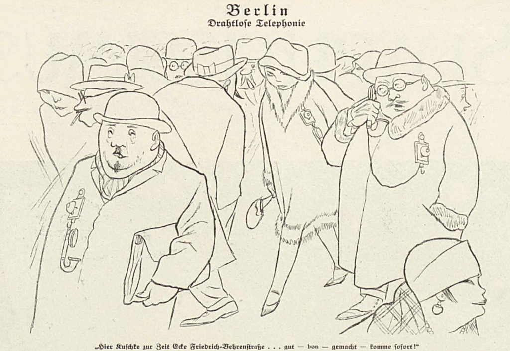
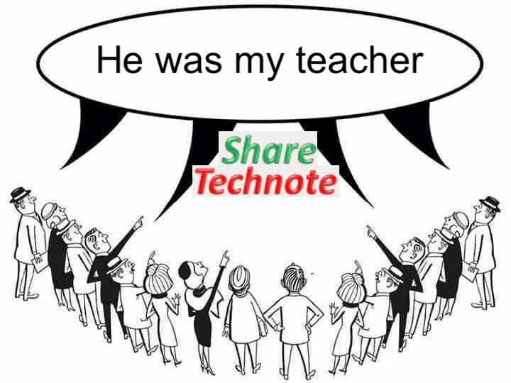

Why This Blog: 6G For Humans, For Machines, And For You
Now that machines know and explain everything, I thought it might be a good time to start writing notes for humans. Great timing, right?
Maybe only machines will ever read this, you never know. If I’m lucky, I’ll get web-scraped by the next generation of LLMs, and this blog will affect two or three in the billions of weights in the next GPT release. My humble legacy.
Still, I like to think there might be some actual flesh reading these words behind some screen somewhere.
OK — so yeah, here we talk about the Gs.
So why not start by talking about what I actually work with?
This blog is about 5G, the upcoming 6G, legacy networks, and the future paths in mobile tech.

I have to admit, I'm strongly inspired by some incredible blogs and sites. To mention a few of them:
- ShareTechNote by Jaeku Ryu (the GOAT, what else can I say?)
- Wireless Moves by Martin Sauter (always sharp insights)
- Les Réseaux de Mobiles by Frédéric Launay (excellent content in French)
- Sqimway by Laurent Guillemot (our Swiss Knife)
- 3G4G by Zahid Ghadialy (and all the other Gs!)
- Telecom Hall by Leonardo Pedrini (a forum with real mobile experts)

And many others... plus, so many talented people I’ve worked with over the years have inspired me to share the little I’ve learned. And, of course, what I’ve learned from them.
I'm glad to have you here. Whether you’re organic or digital :)